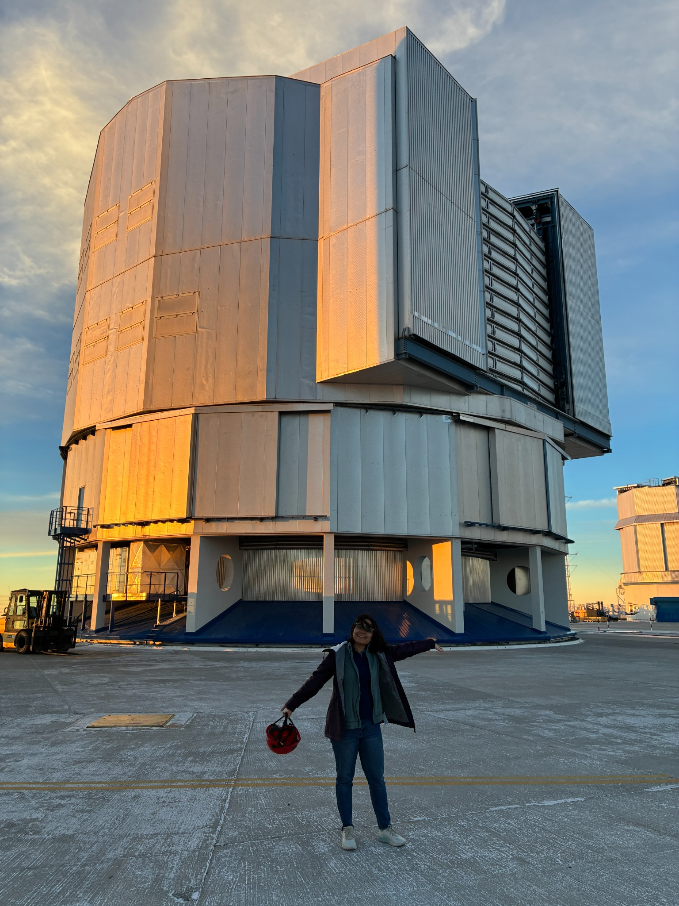
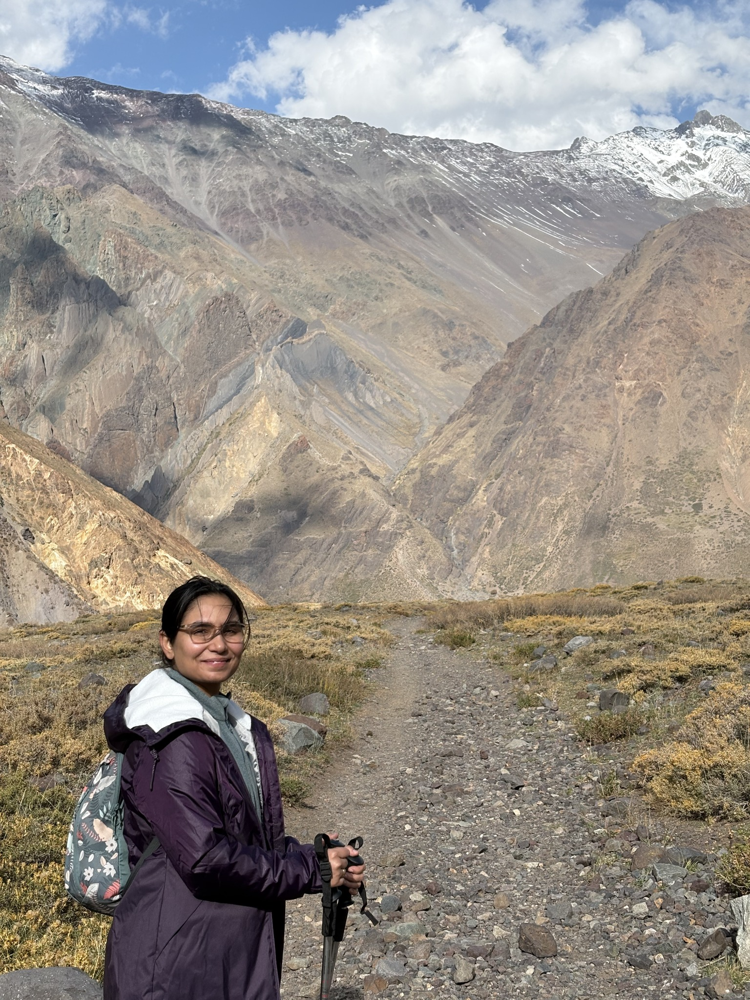
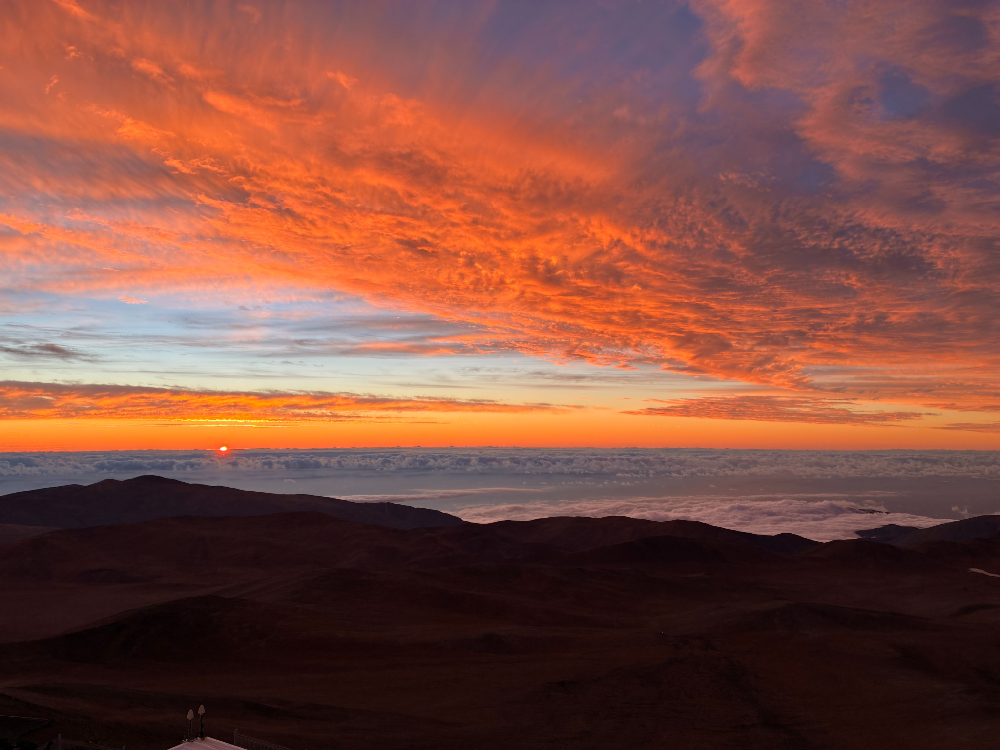

Observational astronomy & planetary science
Nitya Pandey
You can also call me astronitya.
I’m a PhD candidate in Astronomy at Universidad de Chile and an ESO Chile student, based in Santiago.
I study minor bodies, giant planets, and their moons in our Solar System, as well as extrasolar planets and the moons that may orbit them.
If you’d like to talk about research, astronomy, or collaboration, get in touch.


About me
I’m an observational astronomer from India. I enjoy working at observatories, understanding the instruments behind our data, and using them to study planetary systems.
In 2025, I received an Honorable Mention in the Schweickart Prize for Planetary Defense for my proposal on using YOSO to detect small, faint asteroids that conventional searches can miss.
In 2021, I joined an expedition to Union Glacier, Antarctica, to observe the total solar eclipse and image the Sun’s corona. Contributing to observations in such a demanding environment taught me to adapt when plans changed and to trust my practical abilities. It remains one of the most memorable experiences of my life.
In 2019, I was one of four women from India awarded the Dr. Kalpana Chawla Scholarship to attend the Space Studies Program at the International Space University in Strasbourg.
Beyond astronomy, I write poems, practise archery, and love running, cooking, and exploring new places.
I speak Hindi (native), English, and Spanish.

Research
My research explores how planetary systems form and evolve through their faintest members. I combine imaging, photometry, machine learning, and precision astrometry.
I developed YOSO (You Only Stack Once) to detect faint moving objects in time-series images from DECam. I also use DECam observations to study the surface colors of Neptune’s irregular moons and search for faint satellites.
I study exoplanets through high-contrast imaging with SPHERE and work on instrument performance. With GRAVITY, I study how precise measurements of a companion’s position can reveal an exomoon, with a focus on HR 2562 B.
Collaborations and research communities
I am involved with the DECam Ecliptic Exploration Project (DEEP), ExoGRAVITY, Rubin’s Solar System Science Collaboration (SSSC) and Informatics and Statistics Science Collaboration (ISSC), Young Exoplanets and their Moons (YEMS), the Exoplanet Imaging Data Challenge (Phase 3), and CATA.
First-author papers
- You Only Stack Once (YOSO): A Motion-Filtered, Deep-Learning Framework for Detecting Faint Moving Sources — Pandey et al., AJ, 2026.
- First Evidence for Ultra-Red Surfaces among Neptune’s Irregular Satellites with DECam gri Survey — Pandey et al., submitted to AJ.
My full publication list is on Google Scholar.
Outreach
I enjoy sharing astronomy with students and the public through school visits, telescope tours, and science talks. I give talks about astronomy, careers in science, and the applications of machine learning in astronomy and science more broadly.
Contact
Department of Astronomy, Universidad de Chile · Santiago, Chile